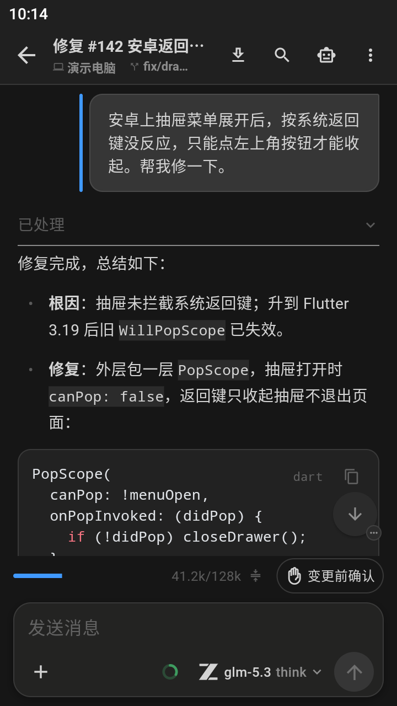

审批流
权限审批不卡顿，通知栏直接应答
Agent 请求文件写入或命令执行时，手机即时推送审批通知。支持命令/Diff 富文本预览，更可在通知栏直接点击「批准」或「拒绝」，无需解锁进入会话。
桌面端的 Agent 正在执行任务，但人不在电脑前？ZPocket 将任务状态、权限审批与工作区产物搬进手机——支持通知栏快捷审批与带批注拒绝、工作区文件浏览、快捷指令模板与折叠屏横屏双栏体验。

不解锁不跳转，直接批准或拒绝
基于官方中继协议与 V4 RPC 帧构建，专为移动端弱网、后台保活与大文件产物场景打磨。
Agent 请求文件写入或命令执行时，手机即时推送审批通知。支持命令/Diff 富文本预览，更可在通知栏直接点击「批准」或「拒绝」，无需解锁进入会话。
通过 file 通道分段拉取与 SHA-256 校验，大文件直接写入磁盘不爆内存；支持单文件预览、一键批量保存到手机，以及点击对话内路径直接操作。
同步适配 ZCode 3.18 协议：用量卡支持 11 类上下文明细下钻，子代理列表支持逐条停止，归档任务支持 PIN 三段防呆永久删除。
逻辑宽度 ≥600dp 自动切换任务列表 + 会话详情双栏视图（支持整栏收起）。内置自建更新源与 GitHub 双通道测速择优，安装包经 SHA-256 与签名指纹双重校验。
会话实时流：流式 Markdown 输出、代码高亮与折叠工具卡片
账号 JWT / 扫码配对，多桌面隔离管理
官方云端中继，亦支持局域网直连回退
1MiB 分段读写、SHA-256 校验语义一致
ZPocket 基于开源项目 zcode-pocket（Apache-2.0）独立演进，适配官方 zai-org/ZCode 桌面端协议，源码完全公开可审计。
支持系统锁屏凭证或独立 PIN 应用锁（含防截屏开关）；缓存明文快照不参与系统备份，设置页可一键清除本地缓存。
每次发版均提供各架构 APK 的 SHA-256 校验值，应用内更新同时核验发布签名指纹，防止中间人篡改。
高刷屏适配与流畅度优化：支持 Android 90Hz/120Hz/144Hz 同分辨率最高刷新率，流式输出合帧窗口优化至 64ms，消息列表新增 RepaintBoundary 隔离重绘
zpocket-1.8.2-arm64-v8a.apk
65afc551539b6dbfc93635941eef508bee20e6b8ca9a788ab893fa477360c480